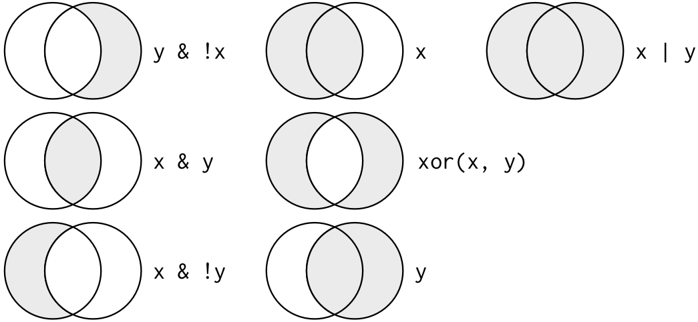

library(package = tidyverse)Into the tidyverse: dplyr, select, filter, and pipes
1 Introduction
1.1 Libraries we will use today
“Load” the package we will use today (output omitted)
- you must run this code chunk
If package not yet installed, then must install before you load. Install in “console” rather than .qmd file
- Generic syntax:
install.packages(pkgs = "package_name") - Install “tidyverse”:
install.packages(pkgs = "tidyverse")
Note: when we load package, name of package is not in quotes; but when we install package, name of package is in quotes:
install.packages(pkgs = "tidyverse")library(package = tidyverse)
1.2 Data for sections on select(), filter(), and arrange() functions
Load .Rdata data frames, df_event and df_school
Data on off-campus recruiting events by public universities
- Data frame object
df_event- One observation per university, recruiting event
- Data frame object
df_school- One observation per high school (visited and non-visited)
rm(list = ls()) # remove all objects in current environment
getwd()
#> [1] "/Users/jaquette/Documents/rclass1/lectures/into_the_tidyverse"
#load dataset with one obs per recruiting event
load(
file = url(description = "https://github.com/ozanj/rclass/raw/master/data/recruiting/recruit_event_somevars.RData")
)
#load dataset with one obs per high school
load(
file = url(description = "https://github.com/ozanj/rclass/raw/master/data/recruiting/recruit_school_somevars.RData")
)1.3 Data for sections on pipes %>% and mutate() function
Load .Rdata data frame wwlist, “prospects” purchased by Western Washington U.
Note: we won’t use this data frame until the lecture section on “pipes”
- You can ignore
wwlistdata frame for lecture sections on select(), filter(), and arrange() functions
The “Student list” business
- Universities identify/target “prospects” by buying “student lists” from College Board/ACT (e.g., $.50+ per prospect)
- Prospect lists contain contact info (e.g., address, email), academic achievement, socioeconomic, demographic characteristics
- Universities choose which prospects to purchase by filtering on criteria like zip-code, GPA, test score range, etc.
#load prospect list data
load(
file = url(description = "https://github.com/ozanj/rclass/raw/master/data/prospect_list/wwlist_merged.RData")
)Object wwlist
- De-identified list of prospective students purchased by Western Washington University from College Board
- We collected these data using public records requests request
1.3.1 Data frame wwlist, “prospects” purchased by Western Washington U.
Observations on wwlist
- each observation represents a prospective student
typeof(x = wwlist)
#> [1] "list"
dim(x = wwlist)
#> [1] 268396 41Variables on wwlist
some vars provide de-identified data on individual prospects
- e.g.,
psat_range,state,sex,ethn_code
- e.g.,
some vars provide data about zip-code student lives in
- e.g.,
med_inc,pop_total,pop_black
- e.g.,
some vars provide data about school student enrolled in
- e.g.,
fr_lunchis number of students on free/reduced lunch - note: bad merge between prospect-level data and school-level data
- e.g.,
names(x = wwlist)
str(object = wwlist)
glimpse(x = wwlist) # tidyverse function, similar to str()Variable firstgen identifies whether prospect is a first-generation college student
Imagine we want to isolate all the first-generation prospects
- Investigate variable type/structure.
- A dichotomous var, but stored as character in
wwlist. So must use quotes (''or"") to filter/subset based on values offirstgen
str(object = wwlist$firstgen)
#> chr [1:268396] NA "N" "N" "N" NA "N" "N" "Y" "Y" "N" "N" "N" "N" "N" "N" ...- Create frequency table to identify possible values of
firstgen
table(wwlist$firstgen, useNA = "always")
#>
#> N Y <NA>
#> 193333 65046 10017- Isolate all the first-gen prospects (output omitted)
filter(.data = wwlist, firstgen == "Y")2 Investigating data patterns
Introduction to the dplyr library
dplyr, a package within the tidyverse suite of packages, provide tools for manipulating data frames
- Wickham describes functions within
dplyras a set of “verbs” that fall in the broader categories of subsetting, sorting, and transforming
| Today | Upcoming weeks |
|---|---|
| Subsetting data | Transforming data |
- select() variables |
- mutate() creates new variables |
- filter() observations |
- summarize() calculates across rows |
| Sorting data | - group_by() to calculate across rows within groups |
- arrange() |
All dplyr verbs (i.e., functions) work as follows
- first argument is a data frame
- subsequent arguments describe what to do with variables and observations in data frame
- refer to variable names without quotes
- result of the function is a new data frame
Conventions lecture uses for argument names, data frame objects, and column names
As in the base R lecture, we name explicitly supplied arguments when the function has a fixed argument name.
- Most R users don’t explicitly state the argument name when using functions. We do it here for pedagogical purposes.
- In most dplyr verbs – including
select(),filter(), andarrange()– the data frame argument is named.data - In
count(), the data frame argument is namedx
For example, select(.data = df_event, instnm, event_date) has three distinct kinds of names:
selectis the function name..datais the fixed argument name, anddf_eventis the data frame object supplied to it.instnmandevent_dateare column names supplied through...; we leave these selections unnamed and unquoted.
Likewise, filter(.data = df_school, school_type == "public") uses an unquoted column name (school_type) and a quoted character value ("public") in its filtering condition. The condition is supplied through ... and does not need an invented argument name.
Syntax templates use placeholders such as df_name and logical_condition; replace them with actual objects or expressions when writing runnable code.
Later, when we use pipes, the pipe supplies the data frame argument for us. We continue naming other explicitly written arguments, including arguments in nested helper functions.
2.1 select() variables
Select variables using select() function
Printing observations is key to investigating data, but datasets often have hundreds, thousands of variables
select() function selects columns of data (i.e., variables) you specify
- let’s check out the help file for
select()function by typing?selectin console - first argument is the name of data frame object
- remaining arguments are variable names, which are separated by commas and without quotes
Without assignment (<-), select() by itself simply prints selected vars
#?select
select(.data = df_event,instnm,event_date,event_type,event_state,med_inc)
#> # A tibble: 18,680 × 5
#> instnm event_date event_type event_state med_inc
#> <chr> <date> <chr> <chr> <dbl>
#> 1 UM Amherst 2017-10-12 public hs MA 71714.
#> 2 UM Amherst 2017-10-04 public hs MA 89122.
#> 3 UM Amherst 2017-10-25 public hs MA 70136.
#> 4 UM Amherst 2017-10-26 public hs MA 70136.
#> 5 Stony Brook 2017-10-02 public hs MA 71024.
#> 6 USCC 2017-09-18 private hs MA 71024.
#> 7 UM Amherst 2017-09-18 private hs MA 71024.
#> 8 UM Amherst 2017-09-26 public hs MA 97225
#> 9 UM Amherst 2017-09-26 private hs MA 97225
#> 10 UM Amherst 2017-10-12 public hs MA 77800.
#> # ℹ 18,670 more rowsRecall that all dplyr functions (e.g., select()) return a new data frame object
- type equals “list”
- length equals number of vars you select
typeof(x = select(.data = df_event,instnm,event_date,event_type,event_state,med_inc))
#> [1] "list"
length(x = select(.data = df_event,instnm,event_date,event_type,event_state,med_inc))
#> [1] 5glimpse(): tidyverse function for viewing data frames
- a cross between
str()and simply printing data
?glimpse
glimpse(x = df_event)glimpse() a select() set of variables
glimpse(x = select(.data = df_event,instnm,event_date,event_type,event_state,med_inc))
#> Rows: 18,680
#> Columns: 5
#> $ instnm <chr> "UM Amherst", "UM Amherst", "UM Amherst", "UM Amherst", "S…
#> $ event_date <date> 2017-10-12, 2017-10-04, 2017-10-25, 2017-10-26, 2017-10-0…
#> $ event_type <chr> "public hs", "public hs", "public hs", "public hs", "publi…
#> $ event_state <chr> "MA", "MA", "MA", "MA", "MA", "MA", "MA", "MA", "MA", "MA"…
#> $ med_inc <dbl> 71713.5, 89121.5, 70136.5, 70136.5, 71023.5, 71023.5, 7102…With assignment (<-), select() creates a new object containing only the variables you specify
event_small <- select(.data = df_event,instnm,event_date,event_type,event_state, med_inc)
glimpse(x = event_small)
#> Rows: 18,680
#> Columns: 5
#> $ instnm <chr> "UM Amherst", "UM Amherst", "UM Amherst", "UM Amherst", "S…
#> $ event_date <date> 2017-10-12, 2017-10-04, 2017-10-25, 2017-10-26, 2017-10-0…
#> $ event_type <chr> "public hs", "public hs", "public hs", "public hs", "publi…
#> $ event_state <chr> "MA", "MA", "MA", "MA", "MA", "MA", "MA", "MA", "MA", "MA"…
#> $ med_inc <dbl> 71713.5, 89121.5, 70136.5, 70136.5, 71023.5, 71023.5, 7102…Select helper functions
select() can use “helper functions” starts_with(), contains(), and ends_with() to choose columns
?selectExample:
#names(x = df_event)
select(.data = df_event,instnm,starts_with(match = "event"))
#> # A tibble: 18,680 × 8
#> instnm event_date event_type event_state event_inst event_name
#> <chr> <date> <chr> <chr> <chr> <chr>
#> 1 UM Amherst 2017-10-12 public hs MA In-State Amherst-Pelham Regi…
#> 2 UM Amherst 2017-10-04 public hs MA In-State Hampshire County Co…
#> 3 UM Amherst 2017-10-25 public hs MA In-State Chicopee High Schoo…
#> 4 UM Amherst 2017-10-26 public hs MA In-State Chicopee Comprehens…
#> 5 Stony Brook 2017-10-02 public hs MA Out-State Easthampton High Sc…
#> 6 USCC 2017-09-18 private hs MA Out-State Williston Northampt…
#> 7 UM Amherst 2017-09-18 private hs MA In-State Williston-Northampt…
#> 8 UM Amherst 2017-09-26 public hs MA In-State Granby Jr Sr High S…
#> 9 UM Amherst 2017-09-26 private hs MA In-State MacDuffie School Vi…
#> 10 UM Amherst 2017-10-12 public hs MA In-State Smith Academy Visit
#> # ℹ 18,670 more rows
#> # ℹ 2 more variables: event_location_name <chr>, event_datetime_start <dttm>2.2 Rename variables
rename() function renames variables within a data frame object
Syntax:
rename(.data = df_name, new_name = old_name, ...)
rename(.data = df_event, g12_offered = g12offered,
titlei = titlei_status_pub)
names(x = df_event)Variable names do not change permanently unless we combine rename with assignment
rename_event <- rename(.data = df_event, g12_offered = g12offered, titlei = titlei_status_pub)
names(x = rename_event)
rm(rename_event)2.3 count() function
count() function from dplyr package counts the observations in each group
Syntax [see help file for full syntax]
count(x = df_name, ...)
Arguments [see help file for full arguments]
x: the data frame supplied tocount();df_nameis a placeholder for its object name...: variables to group by
Examples of using count()
- Without vars in
...argument, counts number of obs in object
count(x = df_school)
# df_school %>% count() # same as above but using pipes
str(object = count(x = df_school))
# #df_school %>% count() %>% str() # same as above but using pipesWith vars in
...argument, counts number of obs per variable value- This is the best way to create frequency table, better than
table() - note: by default,
count()always showsNAs[this is good!]
count(x = df_school,school_type) # df_school %>% count(school_type) # same as above but using pipes str(object = count(x = df_school,school_type)) # df_school %>% count(school_type) %>% str() # same as above but using pipes- This is the best way to create frequency table, better than
2.4 filter() rows
The filter() function
filter() allows you to select observations based on whether a condition is TRUE or FALSE. Usually, the condition is based on the values of one or more variables in a data frame.
?filterBasic syntax
filter(.data = data_frame, condition)Arguments
.data
The data frame you want to filter....
One or more logical expressions that determine which observations to keep.- Observations where the expression evaluates to
TRUEare kept. - Multiple expressions separated by commas are combined using AND: all conditions must be
TRUE.
- Observations where the expression evaluates to
What does filter() return?
filter()returns a data frame containing only the observations where the filtering condition isTRUE.
Example from data frame object df_school, each obs is a high school
- Show all obs where the high school received 1 visit from UC Berkeley (110635) [output omitted]
filter(.data = df_school,visits_by_110635 == 1)Note that resulting object is list, consisting of obs where condition TRUE
nrow(x = df_school)
#> [1] 21301
nrow(x = filter(.data = df_school,visits_by_110635 == 1))
#> [1] 528The filter() function
Task: Count the number of high schools that received 1 visit from UC Berkeley.
[dplyr] Using filter():
nrow(x = filter(.data = df_school, visits_by_110635 == 1))
#> [1] 528Filter, character variables
Use single quotes '' or double quotes "" to refer to values of character variables
glimpse(x = select(.data = df_school, school_type, state_code))
#> Rows: 21,301
#> Columns: 2
#> $ school_type <chr> "public", "public", "public", "public", "public", "public"…
#> $ state_code <chr> "AK", "AK", "AK", "AK", "AK", "AK", "AK", "AK", "AK", "AK"…Identify all private high schools in CA that got 1 visit by particular universities
- Visited once by UC Berkeley (ID=110635)
filter(.data = df_school,visits_by_110635 == 1, school_type == "private",
state_code == "CA")- Visited once by University of Alabama (ID=100751)
filter(.data = df_school,visits_by_100751 == 1, school_type == "private",
state_code == "CA") - Visited once by Berkeley and University of Alabama
filter(.data = df_school,visits_by_100751 == 1, visits_by_110635 == 1,
school_type == "private", state_code == "CA") Filter by multiple conditions
Task: Count the number of private high schools in CA that received 1 visit each from UC Berkeley and University of Alabama.
Using filter():
nrow(x = filter(.data = df_school, visits_by_100751 == 1, visits_by_110635 == 1,
school_type == "private", state_code == "CA"))
#> [1] 92.4.1 Logical operators for comparisons
logical operators useful for: filter obs w/ filter(); create variables w/ mutate()
- logical operators also work when using Base R functions
| Operator symbol | Operator meaning |
|---|---|
== |
Equal to |
!= |
Not equal to |
> |
greater than |
>= |
greater than or equal to |
< |
less than |
<= |
less than or equal to |
& |
AND |
| |
OR |
%in% |
includes |
- Visualization of “Boolean” operators (e.g., AND, OR, AND NOT)

2.4.2 Filters and comparisons, Demonstration
Schools visited by Bama (100751) and Berkeley (110635)
# Berkeley AND Bama
filter(.data = df_school,visits_by_100751 >= 1, visits_by_110635 >= 1)
filter(.data = df_school,visits_by_100751 >= 1 & visits_by_110635 >= 1) # same same
filter(.data = df_school,(visits_by_100751 >= 1) | (visits_by_110635 >= 1)) # same same# Berkeley OR Bama
filter(.data = df_school,visits_by_100751 >= 1 | visits_by_110635 >= 1)Apply count() function on top of filter() function to count the number of observations that satisfy criteria
- Avoids printing individual observations
# Number of schools that get visit by Berkeley AND Bama
count(x = filter(.data = df_school, visits_by_100751 >= 1 & visits_by_110635 >= 1))
#> # A tibble: 1 × 1
#> n
#> <int>
#> 1 247
# Number of schools that get visit by Berkeley OR Bama
count(x = filter(.data = df_school, visits_by_100751 >= 1 | visits_by_110635 >= 1))
#> # A tibble: 1 × 1
#> n
#> <int>
#> 1 2763- Note: You could also use any of the base R equivalents from the Base R lecture
2.4.3 Filters and comparisons, >=
Number of public high schools that are at least 50% Black in Alabama compared to number of schools that received visit by Bama:
# at least 50% black
count(x = filter(.data = df_school, school_type == "public", pct_black >= 50,
state_code == "AL"))
#> # A tibble: 1 × 1
#> n
#> <int>
#> 1 86
# at least 50% black and received visit by Bama
count(x = filter(.data = df_school, school_type == "public", pct_black >= 50,
state_code == "AL", visits_by_100751 >= 1))
#> # A tibble: 1 × 1
#> n
#> <int>
#> 1 21Number of public high schools that are at least 50% White in Alabama compared to number of schools that received visit by Bama:
# at least 50% white
count(x = filter(.data = df_school, school_type == "public", pct_white >= 50,
state_code == "AL"))
#> # A tibble: 1 × 1
#> n
#> <int>
#> 1 238
# at least 50% white and received visit by Bama
count(x = filter(.data = df_school, school_type == "public", pct_white >= 50,
state_code == "AL", visits_by_100751 >= 1))
#> # A tibble: 1 × 1
#> n
#> <int>
#> 1 822.4.4 Filters and comparisons, not equals (!=)
Count the number of high schools visited by University of Colorado (126614) that are not located in CO
#number of high schools visited by U Colorado
count(x = filter(.data = df_school, visits_by_126614 >= 1))
#> # A tibble: 1 × 1
#> n
#> <int>
#> 1 1056
#number of high schools visited by U Colorado not located in CO
count(x = filter(.data = df_school, visits_by_126614 >= 1, state_code != "CO"))
#> # A tibble: 1 × 1
#> n
#> <int>
#> 1 873
#number of high schools visited by U Colorado located in CO
#count(x = filter(.data = df_school, visits_by_126614 >= 1, state_code == "CO"))2.4.5 Filters and comparisons, %in% operator
What if you wanted to count the number of schools visited by Bama (100751) in a group of states?
- how many schools got at least 1 visit by Bama
ANDwere in the state ofMAORVTORME?
count(x = filter(.data = df_school,visits_by_100751 >= 1, state_code == "MA" |
state_code == "VT" | state_code == "ME"))
#> # A tibble: 1 × 1
#> n
#> <int>
#> 1 108
count(x = filter(
.data = df_school,
(visits_by_100751 >= 1) &
(state_code == "MA" | state_code == "VT" | state_code == "ME"))
)
#> # A tibble: 1 × 1
#> n
#> <int>
#> 1 108Easier way to do this is with %in% operator
count(x = filter(.data = df_school,visits_by_100751 >= 1, state_code %in% c("MA","ME","VT")))
#> # A tibble: 1 × 1
#> n
#> <int>
#> 1 108Select the private high schools that got either 2 or 3 visits from Bama
count(x = filter(.data = df_school, visits_by_100751 %in% 2:3, school_type == "private"))
#> # A tibble: 1 × 1
#> n
#> <int>
#> 1 183
count(x = filter(.data = df_school, visits_by_100751 %in% c(2,3), school_type == "private"))
#> # A tibble: 1 × 1
#> n
#> <int>
#> 1 1832.4.6 Parentheses and operator precedence for complex conditions
2.4.6.1 Simplified operator precedence
Operator precedence determines how R groups an expression when we do not supply parentheses.
Let A, B, and C stand for complete conditions, such as school_type == "public". These letters are placeholders for explaining the logic, not column names to type into filter().
For the comparisons and logical operators we are using here:
- Comparisons such as
==,!=,>=, and%in%form the individual conditions. - AND (
&) groups conditions before OR (|).
| Expression | How R groups it | Meaning in words |
|---|---|---|
A & B | C |
(A & B) | C |
Both A and B must be true, OR C must be true. |
A | B & C |
A | (B & C) |
A must be true, OR both B and C must be true. |
OR allows either alternative or both to be true.
2.4.6.2 Use parentheses to specify the groups you want
Parentheses let us specify which conditions belong together.
| Expression | Meaning in words |
|---|---|
A & (B | C) |
A must be true, AND at least one of B or C must be true. |
(A & B) | C |
Both A and B must be true, OR C must be true. |
These expressions ask different questions. In A & (B | C), every observation must satisfy A. In (A & B) | C, satisfying C is enough, even if A is false.
When combining AND and OR, write parentheses to make the intended groups clear, even when R’s precedence would give the same grouping.
2.4.6.3 From words to grouped conditions to code
Build a complex filter in steps:
- Write what you want in words. Identify requirements that apply to every observation and the alternative ways an observation can qualify.
- Rewrite the request using AND, OR, and parentheses.
- Translate the individual conditions into R. Get one condition working, then add another. Add the remaining conditions and groups one step at a time.
- Check to see if the observations you selected are the ones you wanted.
2.4.6.4 Example: public schools in California or Nevada
In words: Keep public schools located in either California or Nevada.
With grouped conditions: (public school) AND ((California) OR (Nevada)).
Every school must be public. California and Nevada are alternative ways to satisfy the location requirement.
Build the code: Start with one condition: public schools.
filter(.data = df_school, school_type == "public")Add a second condition: public schools in California.
filter(
.data = df_school,
school_type == "public" & state_code == "CA"
)Expand the location requirement to California or Nevada. Keep the two location alternatives together with parentheses.
# Correct for our request: public AND (California OR Nevada)
filter(
.data = df_school,
school_type == "public" &
(state_code == "CA" | state_code == "NV")
)Check the school types and states in the result:
count(
x = filter(
.data = df_school,
school_type == "public" &
(state_code == "CA" | state_code == "NV")
),
school_type, state_code
)
#> # A tibble: 2 × 3
#> school_type state_code n
#> <chr> <chr> <int>
#> 1 public CA 1404
#> 2 public NV 99Wrong for this request: Leave out the grouping parentheses.
# Wrong for our request: R reads this as (public AND California) OR Nevada
filter(
.data = df_school,
school_type == "public" & state_code == "CA" | state_code == "NV"
)This code runs, but it keeps public schools in California and any school in Nevada, including private schools. The public-school requirement applies only to the California alternative.
2.4.6.5 Example: visits by Bama in a group of states
In words: Keep schools with at least one visit by Bama that are located in Massachusetts, Vermont, or Maine.
With grouped conditions: (at least one Bama visit) AND ((MA) OR (VT) OR (ME)).
Start with the visit requirement, then add the grouped location requirement:
filter(.data = df_school, visits_by_100751 >= 1)
# Correct: Bama visit AND (MA OR VT OR ME)
filter(
.data = df_school,
visits_by_100751 >= 1 &
(state_code == "MA" | state_code == "VT" | state_code == "ME")
)Without the parentheses, the following code also includes schools in Vermont or Maine with no Bama visit:
# Wrong for our request: (Bama visit AND MA) OR VT OR ME
filter(
.data = df_school,
visits_by_100751 >= 1 & state_code == "MA" |
state_code == "VT" | state_code == "ME"
)Connection to commas in filter(): Separate conditions supplied to filter() are combined with AND. We can write the same correct filter using a comma, or simplify the state alternatives using %in%:
# The comma combines the visit requirement AND the entire state expression
filter(
.data = df_school,
visits_by_100751 >= 1,
(state_code == "MA" | state_code == "VT" | state_code == "ME")
)
# Same requirements, using %in% for the state alternatives
filter(
.data = df_school,
visits_by_100751 >= 1,
state_code %in% c("MA", "VT", "ME")
)2.4.7 Identifying data type and possible values helpful for filtering
typeof()andstr()shows internal data type of a variabletable()to show potential values of categorical variables
typeof(x = df_event$event_type)
#> [1] "character"
str(object = df_event$event_type) # double quotes indicate character
#> chr [1:18680] "public hs" "public hs" "public hs" "public hs" "public hs" ...
table(df_event$event_type, useNA="always")
#>
#> 2yr college 4yr college other private hs public hs <NA>
#> 951 531 2001 3774 11423 0
typeof(x = df_event$med_inc)
#> [1] "double"
str(object = df_event$med_inc)
#> num [1:18680] 71714 89122 70136 70136 71024 ...Now that we know event_type is a character, we can filter values
count(x = filter(.data = df_event, event_type == "public hs", event_state =="CA"))
#> # A tibble: 1 × 1
#> n
#> <int>
#> 1 1100
#below code would return an error because variables are character
#count(filter(df_event, event_type == public hs, event_state ==CA))2.4.8 Filtering and missing values
Wickham (2018) states:
- “
filter()only includes rows where condition is TRUE; it excludes bothFALSEandNAvalues. To preserve missing values, ask for them explicitly:”
Investigate var df_event$fr_lunch, number of free/reduced lunch students
- only available for visits to public high schools
#visits to public HS with less than 50 students on free/reduced lunch
count(x = filter(.data = df_event,event_type == "public hs", fr_lunch<50))
#> # A tibble: 1 × 1
#> n
#> <int>
#> 1 910
#visits to public HS, where free/reduced lunch missing
count(x = filter(.data = df_event,event_type == "public hs", is.na(x = fr_lunch)))
#> # A tibble: 1 × 1
#> n
#> <int>
#> 1 26
#visits to public HS, where free/reduced is less than 50 OR is missing
count(
x = filter(
.data = df_event,
event_type == "public hs",
fr_lunch<50 | is.na(x = fr_lunch)
)
)
#> # A tibble: 1 × 1
#> n
#> <int>
#> 1 9362.4.9 Exercises
Use the data from df_event, which has one observation for each off-campus recruiting event a university attends
- Count the number of events attended by the University of Pittsburgh (Pitt)
univ_id == 215293
- Count the number of recruiting events by Pitt at public or private high schools
- Count the number of recruiting events by Pitt at public or private high schools located in the state of PA
- Count the number of recruiting events by Pitt at public high schools not located in PA where median income is less than 100,000
- Count the number of recruiting events by Pitt at public high schools not located in PA where median income is greater than or equal to 100,000
- Count the number of out-of-state recruiting events by Pitt at private high schools or public high schools with median income of at least 100,000
Solutions
- Count the number of events attended by the University of Pittsburgh (Pitt)
univ_id == 215293
count(x = filter(.data = df_event, univ_id == 215293))
#> # A tibble: 1 × 1
#> n
#> <int>
#> 1 1225- Count the number of recruiting events by Pitt at public or private high schools
str(object = df_event$event_type)
#> chr [1:18680] "public hs" "public hs" "public hs" "public hs" "public hs" ...
table(df_event$event_type, useNA = "always")
#>
#> 2yr college 4yr college other private hs public hs <NA>
#> 951 531 2001 3774 11423 0
count(x = filter(.data = df_event, univ_id == 215293, event_type == "private hs" |
event_type == "public hs"))
#> # A tibble: 1 × 1
#> n
#> <int>
#> 1 1030- Count the number of recruiting events by Pitt at public or private high schools located in the state of PA
count(x = filter(.data = df_event, univ_id == 215293, event_type == "private hs" |
event_type == "public hs", event_state == "PA"))
#> # A tibble: 1 × 1
#> n
#> <int>
#> 1 262- Count the number of recruiting events by Pitt at public high schools not located in PA where median income is less than 100,000
count(x = filter(.data = df_event, univ_id == 215293, event_type == "public hs",
event_state != "PA", med_inc < 100000))
#> # A tibble: 1 × 1
#> n
#> <int>
#> 1 213- Count the number of recruiting events by Pitt at public high schools not located in PA where median income is greater than or equal to 100,000
count(x = filter(.data = df_event, univ_id == 215293, event_type == "public hs",
event_state != "PA", med_inc >= 100000))
#> # A tibble: 1 × 1
#> n
#> <int>
#> 1 344- Count the number of out-of-state recruiting events by Pitt at private high schools or public high schools with median income of at least 100,000
count(x = filter(.data = df_event, univ_id == 215293, event_state != "PA",
(event_type == "public hs" & med_inc >= 100000) |
event_type == "private hs"))
#> # A tibble: 1 × 1
#> n
#> <int>
#> 1 5532.5 arrange() rows (i.e., sort rows)
2.5.1 arrange() function
arrange() function “arranges” rows in a data frame; said different, it sorts observations
Syntax: arrange(.data = df_name, ...)
- First argument,
.data, is a data frame - Subsequent arguments are a “comma separated list of unquoted variable names”
df_event
arrange(.data = df_event, event_date)Data frame goes back to previous order unless you assign the new order
df_event
df_event <- arrange(.data = df_event, event_date)
df_eventAscending and descending order
arrange()sorts in ascending order by default- use
desc()to sort a column by descending order
arrange(.data = df_event, desc(x = event_date))Can sort by multiple variables
arrange(.data = df_event, univ_id, desc(x = event_date), desc(x = med_inc))
#sort by university and descending by size of 12th grade class; combine with select
select(
.data = arrange(
.data = df_event,
univ_id,
desc(x = g12)
),
instnm,
event_type,
event_date,
g12
)2.5.2 arrange(), missing values sorted at the end
Missing values automatically sorted at the end, regardless of whether you sort ascending or descending
Below, we sort by university, then by date of event, then by ID of high school
#by university, date, ascending school id
select(.data = arrange(.data = df_event, univ_id, desc(x = event_date), school_id),
instnm,event_date,event_type,school_id)
#by university, date, descending school id
select(.data = arrange(.data = df_event, univ_id, desc(x = event_date), desc(x = school_id)),
instnm,event_date,event_type,school_id)Can sort by is.na to put missing values first
select(
.data = arrange(
.data = df_event,
univ_id,
desc(x = event_date),
desc(x = is.na(x = school_id))
),
instnm,
event_date,
event_type,
school_id
)
#> # A tibble: 18,680 × 4
#> instnm event_date event_type school_id
#> <chr> <date> <chr> <chr>
#> 1 Bama 2017-12-18 other <NA>
#> 2 Bama 2017-12-18 private hs A9106483
#> 3 Bama 2017-12-15 other <NA>
#> 4 Bama 2017-12-15 public hs 484473005095
#> 5 Bama 2017-12-15 public hs 062927004516
#> 6 Bama 2017-12-14 other <NA>
#> 7 Bama 2017-12-13 other <NA>
#> 8 Bama 2017-12-13 public hs 130387001439
#> 9 Bama 2017-12-13 private hs 00071151
#> 10 Bama 2017-12-13 public hs 063386005296
#> # ℹ 18,670 more rows2.5.3 Exercise, arranging
Use the data from df_event, which has one observation for each off-campus recruiting event a university attends
- Sort ascending by “univ_id” and descending by “event_date”
- Select four variables in total and sort ascending by “univ_id” and descending by “event_date”
- Now using the same variables from above, sort by
is.nato put missing values in “school_id” first
Solutions
- Sort ascending by “univ_id” and descending by “event_date”
arrange(.data = df_event, univ_id, desc(x = event_date))
#> # A tibble: 18,680 × 33
#> instnm univ_id instst pid event_date event_type zip school_id ipeds_id
#> <chr> <int> <chr> <int> <date> <chr> <chr> <chr> <int>
#> 1 Bama 100751 AL 7115 2017-12-18 private hs 77089 A9106483 NA
#> 2 Bama 100751 AL 7121 2017-12-18 other <NA> <NA> NA
#> 3 Bama 100751 AL 7114 2017-12-15 public hs 75165 484473005095 NA
#> 4 Bama 100751 AL 7100 2017-12-15 public hs 93012 062927004516 NA
#> 5 Bama 100751 AL 7073 2017-12-15 other 98027 <NA> NA
#> 6 Bama 100751 AL 7072 2017-12-14 other 98007 <NA> NA
#> 7 Bama 100751 AL 7118 2017-12-13 public hs 31906 130387001439 NA
#> 8 Bama 100751 AL 7099 2017-12-13 private hs 90293 00071151 NA
#> 9 Bama 100751 AL 7109 2017-12-13 public hs 92630 063386005296 NA
#> 10 Bama 100751 AL 7071 2017-12-13 other 98032 <NA> NA
#> # ℹ 18,670 more rows
#> # ℹ 24 more variables: event_state <chr>, event_inst <chr>, med_inc <dbl>,
#> # pop_total <dbl>, pct_white_zip <dbl>, pct_black_zip <dbl>,
#> # pct_asian_zip <dbl>, pct_hispanic_zip <dbl>, pct_amerindian_zip <dbl>,
#> # pct_nativehawaii_zip <dbl>, pct_tworaces_zip <dbl>,
#> # pct_otherrace_zip <dbl>, fr_lunch <dbl>, titlei_status_pub <fct>,
#> # total_12 <dbl>, school_type_pri <int>, school_type_pub <int>, …- Select four variables in total and sort ascending by “univ_id” and descending by “event_date”
select(.data = arrange(.data = df_event, univ_id, desc(x = event_date)), univ_id, event_date,
instnm, event_type)
#> # A tibble: 18,680 × 4
#> univ_id event_date instnm event_type
#> <int> <date> <chr> <chr>
#> 1 100751 2017-12-18 Bama private hs
#> 2 100751 2017-12-18 Bama other
#> 3 100751 2017-12-15 Bama public hs
#> 4 100751 2017-12-15 Bama public hs
#> 5 100751 2017-12-15 Bama other
#> 6 100751 2017-12-14 Bama other
#> 7 100751 2017-12-13 Bama public hs
#> 8 100751 2017-12-13 Bama private hs
#> 9 100751 2017-12-13 Bama public hs
#> 10 100751 2017-12-13 Bama other
#> # ℹ 18,670 more rows- Select the variables “univ_id”, “event_date”, and “school_id” and sort by
is.nato put missing values in “school_id” first.
select(
.data = arrange(
.data = df_event,
univ_id,
desc(x = event_date),
desc(x = is.na(x = school_id))
),
univ_id,
event_date,
school_id
)
#> # A tibble: 18,680 × 3
#> univ_id event_date school_id
#> <int> <date> <chr>
#> 1 100751 2017-12-18 <NA>
#> 2 100751 2017-12-18 A9106483
#> 3 100751 2017-12-15 <NA>
#> 4 100751 2017-12-15 484473005095
#> 5 100751 2017-12-15 062927004516
#> 6 100751 2017-12-14 <NA>
#> 7 100751 2017-12-13 <NA>
#> 8 100751 2017-12-13 130387001439
#> 9 100751 2017-12-13 00071151
#> 10 100751 2017-12-13 063386005296
#> # ℹ 18,670 more rows3 Pipes
3.1 What are “pipes”, %>%
Pipes are a means of performing multiple steps in a single line of code
- When writing code, the pipe symbol is
%>% - The pipe operator
%>%is created by the magrittr package, which is not part of base R - However, the magrittr package is automatically loaded when you load the tidyverse package
?magrittr::`%>%`pipe syntax: LHS %>% RHS
LHS(refers to “left hand side” of the pipe) is an object or functionRHS(refers to “right hand side” of the pipe) is a function
How pipes work:
- Object created by
LHSbecomes the first argument of the function (RHS) to the right of the%>%pipe symbol - Basic code flow:
object %>% function1 %>% function2 %>% function3
- Output of
some_function1becomes the input (the first argument) of the functionsome_function2to the right of the%>%pipe symbol
Example of using pipes to calculate mean value of atomic vector
1:10 # an atomic vector
#> [1] 1 2 3 4 5 6 7 8 9 10
mean(x = 1:10) # calculate mean without pipes
#> [1] 5.5
1:10 %>% mean() # calculate mean with pipes
#> [1] 5.5- no pipe: (1) write function; (2) data object
1:10is 1st argument ofmean() - pipe: (1) write data object; (2) “pipe” (verb) object as 1st argument of
mean()
Intuitive mnemonic device for understanding pipes
- whenever you see a pipe
%>%think of the words “and then…”
Example: isolate all the first-generation prospects [output omitted]
- in words: start with object
wwlistand then filter first generation students
wwlist %>% filter(firstgen == "Y")below code in words:
- start with
wwlistand then select a few vars and then filter and then sort and then investigate the structure of object
wwlist %>% select(firstgen, state, med_inc_zip) %>%
filter(firstgen == "Y", state == "WA") %>%
arrange(desc(x = med_inc_zip)) %>% str()
#> tibble [32,428 × 3] (S3: tbl_df/tbl/data.frame)
#> $ firstgen : chr [1:32428] "Y" "Y" "Y" "Y" ...
#> $ state : chr [1:32428] "WA" "WA" "WA" "WA" ...
#> $ med_inc_zip: num [1:32428] 216720 216720 216720 216720 216720 ...Example: apply “structure” function str() to wwlist with and without pipes
str(object = wwlist) # without pipe
wwlist %>% str() # with pipeI use the str() when I add new %>%; shows what kind of object being piped in
- task: select a few vars from
wwlist; isolate first-gen students in WA; sort descending by income (output omitted)
wwlist %>% select(firstgen, state, med_inc_zip) %>% str()
wwlist %>% select(firstgen, state, med_inc_zip) %>%
filter(firstgen == "Y", state == "WA") %>% str()
wwlist %>% select(firstgen, state, med_inc_zip) %>%
filter(firstgen == "Y", state == "WA") %>%
arrange(desc(x = med_inc_zip)) %>% str()3.2 Compare data tasks, with and without pipes
Task: Using object wwlist print data for “first-gen” prospects (firstgen == "Y")
# without pipes
filter(.data = wwlist, firstgen == "Y")
# with pipes
wwlist %>% filter(firstgen == "Y")Comparing the two approaches:
- “without pipes”, object
wwlistis the first argumentfilter()function - In “pipes” approach, you don’t specify object
wwlistas first argument infilter()- Why? Because
%>%“pipes” the object to the left of the%>%operator into the function to the right of the%>%operator
- Why? Because
Task: Using object wwlist, print data for “first-gen” prospects for selected variables
#Without pipes
select(.data = filter(.data = wwlist, firstgen == "Y"), state, hs_city, sex)
#With pipes
wwlist %>% filter(firstgen == "Y") %>% select(state, hs_city, sex)Comparing the two approaches:
- In the “without pipes” approach, code is written “inside out”
- The first step in the task – identifying the object – is the innermost part of code
- The last step in task – selecting variables to print – is the outermost part of code
- In “pipes” approach the left-to-right order of code matches how we think about the task
- First, we start with an object and then (
%>%) we usefilter()to isolate first-gen students and then (%>%) we select which variables to print
- First, we start with an object and then (
str() helpful to understand object piped in from one function to another
#object that was "piped" into `select()` from `filter()`
wwlist %>% filter(firstgen == "Y") %>% str()
#object that was created after `select()` function
wwlist %>% filter(firstgen == "Y") %>% select(state, hs_city, sex) %>% str()3.3 count() function with pipes %>%
Recall count() function from dplyr package counts the number of obs by group
Syntax [see help file for full syntax]
count(x = df_name, ...)
Arguments [see help file for full arguments]
x: the data frame supplied tocount();df_nameis a placeholder for its object name...: variables to group by
Examples of using count()
- Without vars in
...argument, counts number of obs in object
count(x = wwlist)
wwlist %>% count()
wwlist %>% count() %>% str()With vars in
...argument, counts number of obs per variable value- This is the best way to create frequency table, better than
table() - note: by default,
count()always showsNAs[this is good!]
- This is the best way to create frequency table, better than
count(x = wwlist,school_category)
wwlist %>% count(school_category)
wwlist %>% count(school_category) %>% str()3.4 pipe operators and new lines
Often want to insert line breaks to make long line of code more readable
- When inserting line breaks, pipe operator
%>%should be the last thing before a line break, not the first thing after a line break
This works
wwlist %>% filter(firstgen == "Y") %>%
select(state, hs_city, sex) %>%
count(sex)This works too
wwlist %>% filter(firstgen == "Y",
state != "WA") %>%
select(state, hs_city, sex) %>%
count(sex)This doesn’t work
wwlist %>% filter(firstgen == "Y")
%>% select(state, hs_city, sex)
%>% count(sex)3.5 The power of pipes
You might be thinking, “what’s the big deal?”
Task:
- in one line of code, modify
wwlistand create bar chart that counts number of prospects purchased by race/ethnicity, separately for in-state vs. out-of-state
wwlist %>% filter(is.na(x = state)==0) %>% # drop obs where variable state missing
mutate(
# create out-of-state indicator; create recoded ethnicity var
out_state = as_factor(
x = if_else(
condition = state != "WA",
true = "out-of-state",
false = "in-state"
)
),
ethn_race = recode_values(x = ethn_code,
"american indian or alaska native" ~ "nativeam",
"asian or native hawaiian or other pacific islander" ~ "api",
"black or african american" ~ "black",
"cuban" ~ "latinx",
"mexican/mexican american" ~ "latinx",
"not reported" ~ "not_reported",
"other-2 or more" ~ "multirace",
"other spanish/hispanic" ~ "latinx",
"puerto rican" ~ "latinx",
"white" ~ "white",
default = ethn_code)
) %>%
group_by(out_state) %>% # group_by "in-state" vs. "out-of-state"
count(ethn_race) %>% # count of number of prospects purchased by race
ggplot(mapping = aes(x=ethn_race, y=n)) + # plot
ylab(label = "number of prospects") + xlab(label = "race/ethnicity") +
geom_col() + coord_flip() + facet_wrap(facets = ~ out_state)Task:
- in one line of code, modify
wwlistand create bar chart of median income (in zip-code) of prospects purchased by race/ethnicity, separately for in-state vs. out-of-state
wwlist %>% filter(is.na(x = state)==0) %>% # drop obs where variable state missing
mutate(
# create out-of-state indicator; create recoded ethnicity var
out_state = as_factor(
x = if_else(
condition = state != "WA",
true = "out-of-state",
false = "in-state"
)
),
ethn_race = recode_values(x = ethn_code,
"american indian or alaska native" ~ "nativeam",
"asian or native hawaiian or other pacific islander" ~ "api",
"black or african american" ~ "black",
"cuban" ~ "latinx",
"mexican/mexican american" ~ "latinx",
"not reported" ~ "not_reported",
"other-2 or more" ~ "multirace",
"other spanish/hispanic" ~ "latinx",
"puerto rican" ~ "latinx",
"white" ~ "white",
default = ethn_code)
) %>%
group_by(out_state, ethn_race) %>% # group_by "out-state" and ethnicity
summarize(avg_inc_zip = mean(x = med_inc_zip, na.rm = TRUE)) %>% # calculate avg. inc
ggplot(mapping = aes(x=out_state, y=avg_inc_zip)) +
ylab(label = "avg. income in zip code") + xlab(label = "") +
geom_col() + coord_flip() + facet_wrap(facets = ~ ethn_race) # plotExample R script from Ben Skinner, which creates analysis data for Skinner (2018)
Other relevant links
- Link to Github repository for Skinner (2018)
- Link to published paper
- Link to Skinner’s Github page
- A lot of cool stuff here
- Link to Skinner’s personal website
- A lot of cool stuff here
3.6 Which objects and functions are pipeable
Which objects and functions are “pipeable” (i.e., work with pipes)?
- A function can work with a pipe when it accepts the piped object as an input. By default,
%>%supplies that object as the function’s first argument. - To chain functions together, each next function must accept the object returned by the preceding function. Functions in a chain can return different object types, as long as the next function accepts the result.
- In practice, people often use pipes to chain functions that accept and return the same object type. For example,
select(),filter(),arrange(), andmutate()accept a data frame and return a data frame, so the output of one is a suitable input for the next. - Pipes can also pass other kinds of objects, including atomic vectors and lists. The functions in the chain determine which inputs are appropriate.
# applying pipes to atomic vectors
1:10 %>% mean
#> [1] 5.5
1:10 %>% mean %>% str()
#> num 5.5But some pipeable functions restrict which kinds of data objects they accept
- In particular, the
dplyrfunctions (e.g.,filter,arrange, etc.) expect the first argument to be a data frame. dplyrfunctions won’t even accept a list as first argument, even though data frames are a particular class of list
wwlist %>% filter(firstgen == "Y") %>% str()
as.data.frame(x = wwlist) %>% str()
as.data.frame(x = wwlist) %>% filter(firstgen == "Y") %>% str()
as.list(x = wwlist) %>% str()
# as.list(x = wwlist) %>% filter(firstgen == "Y") %>% str() # error3.6.1 Practice exercise: Run the following code with and without pipes [Work through on your own]
Task:
- Count the number “first-generation” prospects from the state of Washington
Without pipes
count(x = filter(.data = wwlist, firstgen == "Y", state == "WA"))
#> # A tibble: 1 × 1
#> n
#> <int>
#> 1 32428With pipes
wwlist %>% filter(firstgen == "Y", state == "WA") %>% count()
#> # A tibble: 1 × 1
#> n
#> <int>
#> 1 32428Task: frequency table of school_type for non first-gen prospects from WA
Without pipes
wwlist_temp <- filter(.data = wwlist, firstgen == "N", state == "WA")
table(wwlist_temp$school_type, useNA = "always")
#>
#> private public <NA>
#> 11 46146 12489
rm(wwlist_temp) # cuz we don't need after creating tableWith pipes
wwlist %>% filter(firstgen == "N", state == "WA") %>% count(school_type)
#> # A tibble: 3 × 2
#> school_type n
#> <chr> <int>
#> 1 private 11
#> 2 public 46146
#> 3 <NA> 12489Comparison of two approaches
- without pipes, task requires multiple lines of code (this is quite common)
- first line creates object; second line analyzes object
- with pipes, task can be completed in one line of code and you aren’t left with objects you don’t care about
3.6.2 Student exercises with pipes
Using object
wwlistselect the following variables (state, firstgen, ethn_code) and assign<-them to objectwwlist_temp. (ex. wwlist_temp <- wwlist)Using the object you just created
wwlist_temp, create a frequency table ofethn_codefor first-gen prospects from California.Bonus: Try doing question 1 and 2 together. Use original object
wwlist, but do not assign to a new object.
Once finished you can rm(wwlist_temp)
Solutions pipes %>%
- Using object
wwlistselect the following variables (state, firstgen, ethn_code) and assign them to objectwwlist_temp
wwlist_temp <- wwlist %>%
select(state, firstgen, ethn_code) - Using the object you just created
wwlist_temp, create a frequency table ofethn_codefor first-gen prospects from California.
#names(x = wwlist)
wwlist_temp %>%
filter(firstgen == "Y", state == "CA") %>% count(ethn_code)
#> # A tibble: 10 × 2
#> ethn_code n
#> <chr> <int>
#> 1 american indian or alaska native 4
#> 2 asian or native hawaiian or other pacific islander 86
#> 3 black or african american 10
#> 4 cuban 1
#> 5 mexican/mexican american 643
#> 6 not reported 113
#> 7 other spanish/hispanic 179
#> 8 other-2 or more 4197
#> 9 puerto rican 8
#> 10 white 2933- Bonus: Try doing question 1 and 2 together.
wwlist %>%
select(state, firstgen, ethn_code) %>%
filter(firstgen == "Y", state == "CA") %>%
count(ethn_code)
#> # A tibble: 10 × 2
#> ethn_code n
#> <chr> <int>
#> 1 american indian or alaska native 4
#> 2 asian or native hawaiian or other pacific islander 86
#> 3 black or african american 10
#> 4 cuban 1
#> 5 mexican/mexican american 643
#> 6 not reported 113
#> 7 other spanish/hispanic 179
#> 8 other-2 or more 4197
#> 9 puerto rican 8
#> 10 white 2933
#rm(wwlist_temp)rm(wwlist_temp)4 Creating variables using mutate
We will load the data frame df_school_all. This data frame is based on data from the recruiting project. It contains one observation per US high school and variables identifying the number of visits by particular universities.
Data frame df_school_all
load(
file = url(description = "https://github.com/ozanj/rclass/raw/master/data/recruiting/recruit_school_allvars.RData")
)Our plan for learning how to create new variables
Recall that dplyr package within tidyverse provide a set of functions that can be described as “verbs”: subsetting, sorting, and transforming
| What we’ve done | Where we’re going |
|---|---|
| Subsetting data | Transforming data |
- select() variables |
- mutate() creates new variables |
- filter() observations |
- summarize() calculates across rows |
| Sorting data | - group_by() to calculate across rows within groups |
- arrange() |
Today
- We’ll use
mutate()to create new variables based on calculations across columns within a row
Next week
- We’ll combine
mutate()withsummarize()andgroup_by()to create variables based on calculations across rows
Create new data frame based on df_school_all
Recall, data frame df_school_all has one obs per US high school and then variables identifying number of visits by particular universities
names(x = df_school_all)
#> [1] "state_code" "school_type" "ncessch"
#> [4] "name" "address" "city"
#> [7] "zip_code" "pct_white" "pct_black"
#> [10] "pct_hispanic" "pct_asian" "pct_amerindian"
#> [13] "pct_other" "num_fr_lunch" "total_students"
#> [16] "num_took_math" "num_prof_math" "num_took_rla"
#> [19] "num_prof_rla" "avgmedian_inc_2564" "latitude"
#> [22] "longitude" "visits_by_196097" "visits_by_186380"
#> [25] "visits_by_215293" "visits_by_201885" "visits_by_181464"
#> [28] "visits_by_139959" "visits_by_218663" "visits_by_100751"
#> [31] "visits_by_199193" "visits_by_110635" "visits_by_110653"
#> [34] "visits_by_126614" "visits_by_155317" "visits_by_106397"
#> [37] "visits_by_149222" "visits_by_166629" "total_visits"
#> [40] "inst_196097" "inst_186380" "inst_215293"
#> [43] "inst_201885" "inst_181464" "inst_139959"
#> [46] "inst_218663" "inst_100751" "inst_199193"
#> [49] "inst_110635" "inst_110653" "inst_126614"
#> [52] "inst_155317" "inst_106397" "inst_149222"
#> [55] "inst_166629"Create new version of data frame, called school_v2, which we’ll use to introduce how to create new variables
school_v2 <- df_school_all %>%
select(-contains(match = "inst_")) %>% # remove vars that start with "inst_"
rename( # rename selected variables
visits_by_berkeley = visits_by_110635,
visits_by_boulder = visits_by_126614,
visits_by_bama = visits_by_100751,
visits_by_stonybrook = visits_by_196097,
visits_by_rutgers = visits_by_186380,
visits_by_pitt = visits_by_215293,
visits_by_cinci = visits_by_201885,
visits_by_nebraska = visits_by_181464,
visits_by_georgia = visits_by_139959,
visits_by_scarolina = visits_by_218663,
visits_by_ncstate = visits_by_199193,
visits_by_irvine = visits_by_110653,
visits_by_kansas = visits_by_155317,
visits_by_arkansas = visits_by_106397,
visits_by_sillinois = visits_by_149222,
visits_by_umass = visits_by_166629,
num_took_read = num_took_rla,
num_prof_read = num_prof_rla,
med_inc = avgmedian_inc_2564
)
glimpse(x = school_v2)4.1 Introduce mutate() function
mutate() is dplyr approach to creating variables (not Base R approach)
Description of mutate()
- Creates new columns (variables) that are functions of existing columns
- After creating a new variable using
mutate(), every row of data is retained mutate()works best with pipes%>%
Investigate mutate() syntax
Usage (i.e., syntax)
mutate(.data = df_name, ...)
Arguments
.data: a data frame- if using
mutate()after pipe operator%>%, then this argument can be omitted- Why? Because data frame object to left of
%>%“piped in” to first argument ofmutate()
- Why? Because data frame object to left of
- if using
...: expressions used to create new variables- “Name-value pairs of expressions”
- “The name of each argument will be the name of a new variable, and the value will be its corresponding value.”
- “Use a
NULLvalue in mutate to drop a variable.” - “New variables overwrite existing variables of the same name”
Value
- returns a (data frame) object that contains the original input data frame and new variables that were created by
mutate()
Task:
- Using data frame
school_v2create new variable that measures the pct of students on free/reduced lunch (output omitted)
# create new dataset with fewer vars; not necessary to do this
school_sml <- school_v2 %>%
select(ncessch, school_type, num_fr_lunch, total_students)
#print obs
head(x = school_sml, n = 10)
# create new var
school_sml %>%
mutate(pct_fr_lunch = num_fr_lunch/total_students)
#362/501
# remove data frame object
rm(school_sml) Can create variables using standard mathematical or logical operators [output omitted]
#glimpse(x = school_v2)
school_v2 %>%
select(state_code,school_type,ncessch,med_inc,num_fr_lunch,total_students,num_took_math) %>%
mutate( # each named expression defines a column; its name is the chosen column name
one = 1,
med_inc000 = med_inc/1000,
pct_fr_lunch = num_fr_lunch/total_students*100,
took_math_na = is.na(x = num_took_math)==1
) %>%
select(
state_code,
school_type,
ncessch,
one,
med_inc,
med_inc000,
num_fr_lunch,
total_students,
pct_fr_lunch,
num_took_math,
took_math_na
)Can create variables using “helper functions” called within mutate() [output omitted]
- These are standalone functions can be called within
mutate()- e.g.,
if_else(),recode_values(),case_when()
- e.g.,
- will walk through helper functions in more detail in subsequent sections of lecture
school_v2 %>%
select(state_code,ncessch,name,school_type) %>%
mutate(public = if_else(condition = school_type == "public", true = 1, false = 0))New variable not retained unless we assign <- it to an object (existing or new)
mutate()without assignment
school_v2 %>% mutate(pct_fr_lunch = num_fr_lunch/total_students)
names(x = school_v2)mutate()with assignment
school_v2_temp <- school_v2 %>%
mutate(pct_fr_lunch = num_fr_lunch/total_students)
names(x = school_v2_temp)
rm(school_v2_temp)4.2 mutate() to create multiple variables at once
school_v2 %>%
mutate(pct_fr_lunch = num_fr_lunch/total_students,
pct_prof_math= num_prof_math/num_took_math) %>%
select(num_fr_lunch, total_students, pct_fr_lunch,
num_prof_math, num_took_math, pct_prof_math)Or we could write code this way:
school_v2 %>%
select(num_fr_lunch, total_students, num_prof_math, num_took_math) %>%
mutate(pct_fr_lunch = num_fr_lunch/total_students,
pct_prof_math= num_prof_math/num_took_math) mutate() can use variables previously created within mutate()
school_v2 %>%
select(num_prof_math, num_took_math, num_took_read,num_prof_read) %>%
mutate(pct_prof_math = num_prof_math/num_took_math,
pct_prof_read = num_prof_read/num_took_read,
avg_pct_prof_math_read = (pct_prof_math + pct_prof_read)/2) 4.3 mutate(), removing variables created by mutate()
Within mutate() use syntax var_name = NULL to remove variable from data frame
- note: Variable not permanently removed from data frame unless you use assignment
<-to create new data frame or overwrite existing data frame
ncol(x = school_v2)
school_v2 %>%
select(num_prof_math, num_took_math, num_took_read,num_prof_read) %>% glimpse()
school_v2 %>%
select(num_prof_math, num_took_math, num_took_read,num_prof_read) %>%
mutate(num_prof_math = NULL, num_took_math = NULL) %>% glimpse()
#But variables not permanently removed because we didn't use assignment
ncol(x = school_v2)Why would we remove variables within mutate() rather select()?
- remove temporary “work” variables used to create desired variable
- Example: measure of average of pct who passed math and pct who passed reading
school_v2 %>%
select(num_prof_math, num_took_math, num_took_read,num_prof_read) %>%
mutate(pct_prof_math = num_prof_math/num_took_math, # create work var
pct_prof_read = num_prof_read/num_took_read, # create work var
avg_pct_prof_math_read = (pct_prof_math + pct_prof_read)/2, #create analysis var
pct_prof_math = NULL, # remove work var
pct_prof_read = NULL) %>% # remove work var
glimpse()4.3.1 Student exercise using mutate()
Using the object
school_v2, select the following variables (num_prof_math,num_took_math,num_prof_read,num_took_read) and create a measure of percent proficient in mathpct_prof_mathand percent proficient in readingpct_prof_read.Now using the code for question 1, filter schools where at least 50% of students are proficient in math & reading.
Count the number of schools from question 2.
Using
school_v2, usingmutate()combined withis.na()create a dichotomous indicator variablemed_inc_nathat identifies whethermed_incis missing (NA) or not. And then usecount(med_inc_na)after the pipe to create a frequency table ofmed_inc_na; the pipe supplies the data frame to argumentx. How many observations are missing?
Solutions for exercise using mutate()
- Using the object
school_v2, select the following variables (num_prof_math,num_took_math,num_prof_read,num_took_read) and create a measure of percent proficient in mathpct_prof_mathand percent proficient in readingpct_prof_read.
school_v2 %>%
select(num_prof_math, num_took_math, num_prof_read, num_took_read) %>%
mutate(pct_prof_math = num_prof_math/num_took_math,
pct_prof_read = num_prof_read/num_took_read)
#> # A tibble: 21,301 × 6
#> num_prof_math num_took_math num_prof_read num_took_read pct_prof_math
#> <dbl> <dbl> <dbl> <dbl> <dbl>
#> 1 24.8 146 25.0 147 0.17
#> 2 1.7 17 1.7 17 0.1
#> 3 3.5 14 3.5 14 0.25
#> 4 3 30 3 30 0.1
#> 5 2.8 28 2.8 28 0.1
#> 6 2.5 25 2.4 24 0.1
#> 7 1.55 62 1.55 62 0.025
#> 8 2.1 21 2.2 22 0.1
#> 9 2.3 23 2.3 23 0.1
#> 10 1.9 19 1.9 19 0.1
#> # ℹ 21,291 more rows
#> # ℹ 1 more variable: pct_prof_read <dbl>- Now using the code for question 1, filter schools where at least 50% of students are proficient in math & reading.
school_v2 %>%
select(num_prof_math, num_took_math, num_prof_read, num_took_read) %>%
mutate(pct_prof_math = num_prof_math/num_took_math,
pct_prof_read = num_prof_read/num_took_read) %>%
filter(pct_prof_math >= 0.5 & pct_prof_read >= 0.5)
#> # A tibble: 7,760 × 6
#> num_prof_math num_took_math num_prof_read num_took_read pct_prof_math
#> <dbl> <dbl> <dbl> <dbl> <dbl>
#> 1 135. 260 149. 261 0.52
#> 2 299. 475 418 475 0.63
#> 3 213. 410 332. 410 0.52
#> 4 54.6 105 96.6 105 0.52
#> 5 111. 121 118. 121 0.92
#> 6 1057. 1994 1477. 2204 0.53
#> 7 100. 103 125. 128 0.975
#> 8 56.4 99 84.4 148 0.57
#> 9 445. 586 392. 594 0.76
#> 10 56.0 59 53.1 61 0.95
#> # ℹ 7,750 more rows
#> # ℹ 1 more variable: pct_prof_read <dbl>- Count the number of schools from question 2.
school_v2 %>%
select(num_prof_math, num_took_math, num_prof_read, num_took_read) %>%
mutate(pct_prof_math = num_prof_math/num_took_math,
pct_prof_read = num_prof_read/num_took_read) %>%
filter(pct_prof_math >= 0.5 & pct_prof_read >= 0.5) %>%
count()
#> # A tibble: 1 × 1
#> n
#> <int>
#> 1 7760- Using
school_v2, usingmutate()combined withis.na()create a dichotomous indicator variablemed_inc_nathat identifies whethermed_incis missing (NA) or not. And then usecount(med_inc_na)after the pipe to create a frequency table ofmed_inc_na; the pipe supplies the data frame to argumentx. How many observations are missing?
school_v2 %>%
mutate(med_inc_na = is.na(x = med_inc)) %>%
count(med_inc_na)
#> # A tibble: 2 × 2
#> med_inc_na n
#> <lgl> <int>
#> 1 FALSE 20677
#> 2 TRUE 6244.4 Using if_else() function within mutate()
Description: if_else() assigns values to a new vector according to whether each element of condition is TRUE, FALSE, or NA.
- The returned vector has the same length as
condition.- Within
mutate(), this means one value per row of the input data frame.
- Within
When to use it: Use if_else() to assign one value when a logical condition is TRUE and another when it is FALSE, with an explicit choice for when the condition is NA.
- The condition can involve one or more input variables.
Usage (i.e., syntax)
Simplified usage showing the arguments we will discuss. This is a syntax template, not code to run:
if_else(
condition = logical_condition, # something that evaluates to TRUE, FALSE OR NA
true = value_if_true,
false = value_if_false,
missing = NULL # value to assign if condition evaluates to NA
)Arguments
| Argument | Description |
|---|---|
condition |
A logical vector containing TRUE, FALSE, or NA, usually produced by an expression involving input variables. For example, condition = med_inc > 100000 evaluates whether each school’s median income is greater than 100,000. |
true |
The value assigned to the new vector for observations where condition is TRUE. |
false |
The value assigned to the new vector for observations where condition is FALSE. |
missing |
The value assigned to the new vector for observations where condition is NA.If omitted or set to NULL, those observations receive NA. For example, missing = -9 assigns -9 to observations whose condition is NA. |
Arguments we do not discuss: ..., ptype, size.
What does if_else() return?
- A vector with the same length as
condition; withinmutate(), one value per row. - The supplied
true,false, andmissingvalues determine the output type and must have compatible types. - Numeric values such as 1, 0, and -9 produce a numeric vector
- character labels produce a character vector when all supplied values are compatible.
- When
conditionevaluates to NA, the new vector receives the value specified bymissing. Withmissing = NULL, that value is NA. - A missing input does not necessarily make the condition NA; we will see this in the
nonmiss_mathexample below. mutate()places the returned vector in a column;<-saves the resulting data frame when we use assignment.
Example: Create a 0/1 indicator of whether the school got at least one visit from Berkeley.
# always start by checking the input variable!
school_v2 %>% select(visits_by_berkeley) %>% glimpse()
school_v2 %>% count(visits_by_berkeley)
school_v2_temp <- school_v2 %>%
mutate(
got_visit_berkeley = if_else(
condition = visits_by_berkeley > 0,
true = 1,
false = 0,
missing = NULL
)
)
# always check values of new variable, and values of new variable against values of input
school_v2_temp %>% count(got_visit_berkeley)
school_v2_temp %>% count(visits_by_berkeley,got_visit_berkeley)
rm(school_v2_temp)4.4.1 if_else() within mutate() to create 0/1 indicator variables
We often create dichotomous (0/1) indicator variables of whether something happened (or whether something is TRUE)
- Variables that are of substantive interest to project
- e.g., did student graduate from college
- Variables that help you investigate data, check quality
- e.g., indicator of whether an observation is missing/non-missing for a particular variable
Task
- Create a 0/1 indicator if a school has median income greater than $100,000.
Always a good idea to investigate “input” variables before creating analysis vars
str(object = school_v2$med_inc) # investigate variable type
school_v2 %>% count(med_inc) # frequency count, but this isn't very helpful
school_v2 %>% filter(is.na(x = med_inc)) %>% count()
# shows number of obs w/ missing med_incFirst, distinguish the input value, the result of the condition, and the value assigned to the new vector. These illustrative values show all three possibilities:
Input: med_inc |
Condition: med_inc > 100000 |
Output with true = 1, false = 0, missing = NULL |
|---|---|---|
| 150000 | TRUE | 1 |
| 90000 | FALSE | 0 |
| NA | NA | NA |
For this comparison, FALSE means median income is known to be 100,000 or less. When median income is missing, the comparison returns NA: we do not know whether the income exceeds 100,000. NA is a separate result from FALSE.
Create the variable using the default behavior, explicitly written as missing = NULL:
school_v2 %>%
select(med_inc) %>%
mutate(
inc_gt_100k = if_else(
condition = med_inc > 100000,
true = 1,
false = 0,
missing = NULL
)
) %>%
count(inc_gt_100k)
#> # A tibble: 3 × 2
#> inc_gt_100k n
#> <dbl> <int>
#> 1 0 18632
#> 2 1 2045
#> 3 NA 624Now change only missing to -9. Observations whose condition is TRUE or FALSE keep the same output values. Observations whose condition is NA receive -9 instead of NA:
school_v2 %>%
select(med_inc) %>%
mutate(
inc_gt_100k = if_else(
condition = med_inc > 100000,
true = 1,
false = 0,
missing = -9
)
) %>%
count(inc_gt_100k)
#> # A tibble: 3 × 2
#> inc_gt_100k n
#> <dbl> <int>
#> 1 -9 624
#> 2 0 18632
#> 3 1 2045Here, -9 is a missing-value code. R treats -9 as an ordinary numeric value, not as NA. The output now contains 0, 1, and -9. Omitting missing would give the same result as missing = NULL, not missing = -9.
Task
- Create 0/1 indicator variable
nonmiss_mathwhich indicates whether school has non-missing values for the variablenum_took_math- note:
num_took_mathrefers to number of students at a school that took state math proficiency test
- note:
Always a good to investigate “input” variables before creating analysis vars
school_v2 %>% count(num_took_math) # this isn't very helpful
school_v2 %>% filter(
is.na(x = num_took_math)
) %>% count(
num_took_math
) # shows number of obs w/ missing num_took_mathCreate variable
school_v2 %>%
select(num_took_math) %>%
mutate(
nonmiss_math = if_else(
condition = !is.na(x = num_took_math),
true = 1,
false = 0,
missing = NULL
)
) %>%
count(nonmiss_math)
#> # A tibble: 2 × 2
#> nonmiss_math n
#> <dbl> <int>
#> 1 0 4103
#> 2 1 17198When num_took_math is missing, is.na(x = num_took_math) is TRUE, so !is.na(x = num_took_math) is FALSE. The new vector therefore receives 0 from false. The missing argument is used only when the condition itself is NA; it is not used for these observations.
Take-away: First determine whether the whole condition evaluates to TRUE, FALSE, or NA. That determines whether the new vector receives a value from true, false, or missing.
4.4.2 Student exercises if_else()
- Using the object
school_v2, create 0/1 indicator variablein_state_berkeleythat equals1if the high school is in the same state as UC Berkeley (i.e.,state_code=="CA").
- Create 0/1 indicator
berkeley_and_irvineof whether a school got at least one visit from UC Berkeley AND from UC Irvine.
- Create 0/1 indicator
berkeley_or_irvineof whether a school got at least one visit from UC Berkeley OR from UC Irvine.
For the AND/OR conditions, evaluate the whole condition before deciding which argument supplies the output. A compound condition can sometimes be determined even when one input is missing:
# Toy examples (not run)
FALSE & NA # FALSE: one part is FALSE
TRUE | NA # TRUE: at least one part is TRUEIn the first example, if_else() would use false; in the second, it would use true. It uses missing only when the whole condition is NA.
Solutions if_else()
- Using the object
school_v2, create 0/1 indicator variablein_state_berkeleythat equals1if the high school is in the same state as UC Berkeley (i.e.,state_code=="CA").
str(object = school_v2$state_code) # investigate input variable
school_v2 %>% filter(is.na(x = state_code)) %>% count() # investigate input var
# Create var
school_v2 %>%
mutate(
in_state_berkeley = if_else(
condition = state_code == "CA",
true = 1,
false = 0,
missing = NULL
)
) %>%
count(in_state_berkeley)- Create 0/1 indicator
berkeley_and_irvineof whether a school got at least one visit from UC Berkeley AND from UC Irvine.
# Investigate input vars
school_v2 %>% select(visits_by_berkeley, visits_by_irvine) %>% str()
school_v2 %>% filter(is.na(x = visits_by_berkeley)) %>% count()
school_v2 %>% filter(is.na(x = visits_by_irvine)) %>% count()
# Create variable
school_v2 %>%
mutate(
berkeley_and_irvine = if_else(
condition = visits_by_berkeley > 0 & visits_by_irvine > 0,
true = 1,
false = 0,
missing = NULL
)
) %>%
count(berkeley_and_irvine)- Create 0/1 indicator
berkeley_or_irvineof whether a school got at least one visit from UC Berkeley OR from UC Irvine.
school_v2 %>%
mutate(
berkeley_or_irvine = if_else(
condition = visits_by_berkeley > 0 | visits_by_irvine > 0,
true = 1,
false = 0,
missing = NULL
)
) %>%
count(berkeley_or_irvine)4.5 Using recode_values() function within mutate()
Description: Creates a vector by mapping existing values of a variable to new values. Within mutate(), we use this vector to create or update a column.
When to use it: Use recode_values() when you are creating a new variable based on one input variable (input_var_name) and the new variable can be created by mapping values of the input variable to values of the new variable. Several input values can map to the same new value.
if_else()assigns values based on whether a logical condition is TRUE or FALSE.recode_values()assigns values by matching existing values of one input variable. It can produce two categories or more than two categories.
Usage (i.e., syntax)
Simplified usage from the help file, showing the arguments we will discuss. This is a syntax template, not code to run:
recode_values(
x = input_var_name,
...,
default = NULL
)Arguments
| Argument | Description |
|---|---|
x |
A vector to recode, such as a column of a data frame. Specify the original variable with x = input_var_name. |
... |
A sequence of two-sided formulas, written as input_var_value ~ replacement_value. The left hand side (LHS) specifies the existing value to match. The right hand side (RHS) specifies its replacement. Separate mappings with commas.For example, "public" ~ 1 means: replace the character value “public” with the number 1. |
default |
The value used for inputs that do not match any mapping. If omitted, or set to NULL, unmatched inputs receive a missing value (NA). Supply a value such as default = "other" to give unmatched inputs that value, or use default = input_var_name to retain their original values when the output types are compatible. |
Arguments we do not discuss: from, to, unmatched, ptype.
What type of variable is returned?
recode_values()returns a vector with the same length asx.- Its data type is determined by the replacement values on the RHS and any supplied
default, rather than by the type of the original variable. mutate()places the returned vector in a column;<-saves the resulting data frame.
| Replacement values and default | Output type |
|---|---|
Numbers such as 1 and 0, with no default or a compatible numeric default |
Numeric |
Text such as "regular" and "alternative", with no default or a character default |
Character |
- Character inputs can therefore produce numeric outputs, or character outputs.
- Replacement values and a supplied
defaultmust have compatible types. For example, numeric replacements combined withdefault = "Other"produce an error. - For a character input variable, keeping unmatched original values with
default = input_var_nameis appropriate when the replacements are also character. It would not work when converting that character variable to numeric codes.
Example: Using data frame wwlist, create new 0/1 indicator public_school from variable school_type.
Inspect the input values, specify the mappings, then check the new variable:
str(object = wwlist$school_type)
#> chr [1:268396] "public" "public" NA "public" "public" "public" "public" ...
wwlist %>% count(school_type)
#> # A tibble: 3 × 2
#> school_type n
#> <chr> <int>
#> 1 private 94
#> 2 public 133571
#> 3 <NA> 134731
wwlist_temp <- wwlist %>%
select(school_type) %>%
mutate(
public_school = recode_values(
x = school_type,
"public" ~ 1,
"private" ~ 0,
default = NULL # here we explicitly request the default value
)
)
wwlist_temp %>% head(n = 5)
#> # A tibble: 5 × 2
#> school_type public_school
#> <chr> <dbl>
#> 1 public 1
#> 2 public 1
#> 3 <NA> NA
#> 4 public 1
#> 5 public 1
str(object = wwlist_temp$public_school) # numeric replacements produce numeric output
#> num [1:268396] 1 1 NA 1 1 1 1 1 1 1 ...
wwlist_temp %>% count(school_type, public_school)
#> # A tibble: 3 × 3
#> school_type public_school n
#> <chr> <dbl> <int>
#> 1 private 0 94
#> 2 public 1 133571
#> 3 <NA> NA 134731
rm(wwlist_temp)We default = NULL, so inputs with no matching mapping receive NA. We would get the same result if we just didn’t specify the default argument at all. Here, missing school_type values have no mapping and produce missing public_school values.
But we could assign value of -1 to values that do not match any mapping
wwlist_temp <- wwlist %>%
select(school_type) %>%
mutate(
public_school = recode_values(
x = school_type,
"public" ~ 1,
"private" ~ 0,
default = -1 # values of input var that are not explicitly matched above are assigned value -1
)
)
wwlist_temp %>% head(n = 5)
#> # A tibble: 5 × 2
#> school_type public_school
#> <chr> <dbl>
#> 1 public 1
#> 2 public 1
#> 3 <NA> -1
#> 4 public 1
#> 5 public 1
wwlist_temp %>% count(school_type, public_school)
#> # A tibble: 3 × 3
#> school_type public_school n
#> <chr> <dbl> <int>
#> 1 private 0 94
#> 2 public 1 133571
#> 3 <NA> -1 134731
rm(wwlist_temp)Task: Create school_catv2 based on school_category with these categories:
- “regular”; “alternative”; “special”; “vocational”
Investigate input var:
str(object = wwlist$school_category) # character variable
wwlist %>% count(school_category)Recode: Map each of the observed nonmissing input values to a category. Both regular-school labels map to “regular”; other pairs of labels also share an output category.
wwlist_temp <- wwlist %>%
select(school_category) %>%
mutate(
school_catv2 = recode_values(
x = school_category,
"Alternative Education School" ~ "alternative",
"Alternative/other" ~ "alternative",
"Regular elementary or secondary" ~ "regular",
"Regular School" ~ "regular",
"Special Education School" ~ "special",
"Special program emphasis" ~ "special",
"Vocational Education School" ~ "vocational",
default = NULL
)
)
str(object = wwlist_temp$school_catv2) # character replacements produce character output
#> chr [1:268396] "regular" "regular" NA "regular" "regular" "regular" ...
wwlist_temp %>% count(school_category, school_catv2)
#> # A tibble: 8 × 3
#> school_category school_catv2 n
#> <chr> <chr> <int>
#> 1 Alternative Education School alternative 642
#> 2 Alternative/other alternative 3
#> 3 Regular School regular 132879
#> 4 Regular elementary or secondary regular 89
#> 5 Special Education School special 24
#> 6 Special program emphasis special 2
#> 7 Vocational Education School vocational 26
#> 8 <NA> <NA> 134731
rm(wwlist_temp)Task: Create the same four categories, but map missing inputs to “unknown”. Two ways to do this:
- Include
NA ~ "unknown"among theLHS ~ RHSmappings. Use unquotedNAto match a missing input. - set
default = "unknown"so that unmapped values of input var (hereNA) are assigned value “unknown”
approach 1: Include NA ~ "unknown" among the LHS ~ RHS mappings. Use unquoted NA to match a missing input.
wwlist_temp <- wwlist %>%
select(school_category) %>%
mutate(
school_catv2 = recode_values(
x = school_category,
"Alternative Education School" ~ "alternative",
"Alternative/other" ~ "alternative",
"Regular elementary or secondary" ~ "regular",
"Regular School" ~ "regular",
"Special Education School" ~ "special",
"Special program emphasis" ~ "special",
"Vocational Education School" ~ "vocational",
NA ~ "unknown"
)
)
str(object = wwlist_temp$school_catv2)
wwlist_temp %>% count(school_category, school_catv2)
rm(wwlist_temp)Approach 2: set default = "unknown" so that unmapped values of input var (here NA) are assigned value “unknown”
wwlist_temp <- wwlist %>%
select(school_category) %>%
mutate(
school_catv2 = recode_values(
x = school_category,
"Alternative Education School" ~ "alternative",
"Alternative/other" ~ "alternative",
"Regular elementary or secondary" ~ "regular",
"Regular School" ~ "regular",
"Special Education School" ~ "special",
"Special program emphasis" ~ "special",
"Vocational Education School" ~ "vocational",
default = "unknown"
)
)
str(object = wwlist_temp$school_catv2)
wwlist_temp %>% count(school_category, school_catv2)
rm(wwlist_temp)4.5.1 Using default: build the school-category example step by step
Task: Create the same four categories, this time using default = "regular" for the regular-school labels. Keep missing inputs missing in the final result.
Step 1: Leave out the mappings for the two regular-school labels. [just to see what happens. not recommended in practice!
We map alternative, special, and vocational schools, but have not yet supplied a default. Both regular-school labels and missing inputs are unmatched, so they receive NA.
wwlist_temp <- wwlist %>%
select(school_category) %>%
mutate(
school_catv2 = recode_values(
x = school_category,
"Alternative Education School" ~ "alternative",
"Alternative/other" ~ "alternative",
"Special Education School" ~ "special",
"Special program emphasis" ~ "special",
"Vocational Education School" ~ "vocational"
)
)
wwlist_temp %>% count(school_category, school_catv2)
#> # A tibble: 8 × 3
#> school_category school_catv2 n
#> <chr> <chr> <int>
#> 1 Alternative Education School alternative 642
#> 2 Alternative/other alternative 3
#> 3 Regular School <NA> 132879
#> 4 Regular elementary or secondary <NA> 89
#> 5 Special Education School special 24
#> 6 Special program emphasis special 2
#> 7 Vocational Education School vocational 26
#> 8 <NA> <NA> 134731Step 2: Add default = "regular".
Every input with no matching mapping now receives “regular”. This includes the two regular-school labels and missing inputs. The table shows why we still need to handle missing inputs explicitly. Not recomended in practice!!
wwlist_temp <- wwlist %>%
select(school_category) %>%
mutate(
school_catv2 = recode_values(
x = school_category,
"Alternative Education School" ~ "alternative",
"Alternative/other" ~ "alternative",
"Special Education School" ~ "special",
"Special program emphasis" ~ "special",
"Vocational Education School" ~ "vocational",
default = "regular"
)
)
wwlist_temp %>% count(school_category, school_catv2)
#> # A tibble: 8 × 3
#> school_category school_catv2 n
#> <chr> <chr> <int>
#> 1 Alternative Education School alternative 642
#> 2 Alternative/other alternative 3
#> 3 Regular School regular 132879
#> 4 Regular elementary or secondary regular 89
#> 5 Special Education School special 24
#> 6 Special program emphasis special 2
#> 7 Vocational Education School vocational 26
#> 8 <NA> regular 134731Step 3: Add NA ~ NA to keep missing inputs missing.
Missing inputs now have an explicit mapping. The two regular-school labels still use default = "regular". This gives us the four requested categories while preserving missing values.
wwlist_temp <- wwlist %>%
select(school_category) %>%
mutate(
school_catv2 = recode_values(
x = school_category,
"Alternative Education School" ~ "alternative",
"Alternative/other" ~ "alternative",
"Special Education School" ~ "special",
"Special program emphasis" ~ "special",
"Vocational Education School" ~ "vocational",
NA ~ NA,
default = "regular"
)
)
wwlist_temp %>% count(school_category, school_catv2)
#> # A tibble: 8 × 3
#> school_category school_catv2 n
#> <chr> <chr> <int>
#> 1 Alternative Education School alternative 642
#> 2 Alternative/other alternative 3
#> 3 Regular School regular 132879
#> 4 Regular elementary or secondary regular 89
#> 5 Special Education School special 24
#> 6 Special program emphasis special 2
#> 7 Vocational Education School vocational 26
#> 8 <NA> <NA> 134731str(object = wwlist_temp$school_catv2)
wwlist_temp %>% count(school_catv2)
wwlist %>% count(school_category)
rm(wwlist_temp)default applies to every unmatched input, not to a particular category name. If another nonmissing label appeared in the input, it would also become “regular” in this example. Inspect the original values and compare them with the recoded values to check that this is what you want.
To retain unmatched original values instead, use default = school_category. The already matched labels would still receive their mapped values; other inputs would retain their original values.
Task: Create school_catv2 based on school_category, this time as a numeric variable:
1for “regular”;2for “alternative”;3for “special”;4for “vocational”
The input values are still character, so the LHS values stay quoted. The RHS values are now unquoted numbers, so the output is numeric. No default is supplied, so unmatched inputs, including missing inputs, receive NA.
wwlist_temp <- wwlist %>%
select(school_category) %>%
mutate(
school_catv2 = recode_values(
x = school_category,
"Alternative Education School" ~ 2,
"Alternative/other" ~ 2,
"Regular elementary or secondary" ~ 1,
"Regular School" ~ 1,
"Special Education School" ~ 3,
"Special program emphasis" ~ 3,
"Vocational Education School" ~ 4
)
)
str(object = wwlist_temp$school_catv2) # numeric variable now
wwlist_temp %>% count(school_category, school_catv2)
wwlist %>% count(school_category)
rm(wwlist_temp)4.5.2 Student exercise using recode_values() within mutate()
load(
file = url(description = "https://github.com/ozanj/rclass/raw/master/data/recruiting/recruit_event_somevars.RData")
)
names(x = df_event)- Using object
df_event, assign new objectdf_event_tempand create a numeric variableevent_typev2based onevent_typewith these categories:1for “2yr college”;2for “4yr college”;3for “other”;4for “private hs”;5for “public hs”
- Create the same numeric codes, this time leaving out the mapping for “public hs” and using
default = 5. Keep missing inputs missing withNA ~ NA. Compare the original and recoded values to check the result.
Solutions using recode_values() within mutate()
Check input variable:
names(x = df_event)
str(object = df_event$event_type)
df_event %>% count(event_type)- Map all five event types explicitly:
df_event_temp <- df_event %>%
select(event_type) %>%
mutate(
event_typev2 = recode_values(
x = event_type,
"2yr college" ~ 1,
"4yr college" ~ 2,
"other" ~ 3,
"private hs" ~ 4,
"public hs" ~ 5
)
)
str(object = df_event_temp$event_typev2)
df_event_temp %>% count(event_type, event_typev2)
df_event %>% count(event_type)- Use
default = 5for unmatched nonmissing inputs:
df_event_temp <- df_event %>%
select(event_type) %>%
mutate(
event_typev2 = recode_values(
x = event_type,
"2yr college" ~ 1,
"4yr college" ~ 2,
"other" ~ 3,
"private hs" ~ 4,
NA ~ NA,
default = 5
)
)
str(object = df_event_temp$event_typev2)
df_event_temp %>% count(event_type, event_typev2)
df_event %>% count(event_type)The two solutions produce the same codes for the event types in these data. default = 5 would also assign 5 to any other unmatched nonmissing input, so always check the input values before using a default.
4.6 Using case_when() function within mutate()
Description: Returns a vector with one value per row in these mutate() examples. Each value is taken from the RHS of the first TRUE condition, or from .default when no condition is TRUE. mutate() uses the returned vector to create or update a column.
When to use it: Use case_when() when you can describe the new variable using a series of logical conditions involving one or more input variables.
recode_values()matches values of one input variable to replacement values.case_when()matches logical conditions to replacement values. Conditions can use comparisons,&,|,%in%, andis.na().- For each row, the first condition that is TRUE supplies the result. If no condition is TRUE, the row receives
.default.
Usage (i.e., syntax)
Simplified usage from the help file, showing the arguments we will discuss. This is a syntax template, not code to run:
case_when(
...,
.default = NULL
)Arguments
| Argument | Description |
|---|---|
... |
A sequence of two-sided formulas, written as logical_condition ~ replacement_value. The left hand side (LHS) must evaluate to a logical vector. The right hand side (RHS) supplies the result for rows matched by that condition. Separate conditions with commas. For example, state == "WA" & firstgen == "Y" ~ "instate_firstgen" assigns “instate_firstgen” to rows where both conditions are TRUE. |
.default |
The value assigned to the new vector for rows where no LHS condition is TRUE (that is, all LHS conditions are FALSE or NA). If omitted, or set to NULL, unmatched rows receive a missing value (NA).For example, .default = "unknown" assigns “unknown” to every unmatched row. We explicitly write .default in our examples so that we always consider what happens to unmatched rows. |
Arguments we do not discuss: .unmatched, .ptype, .size.
Note: use default in recode_values(), but .default in case_when().
What does case_when() return?
case_when()returns a vector with the same length as the LHS condition vectors- Within
mutate(), this means one value per row of the input data frame. - The RHS replacement values and any supplied
.defaultdetermine the output type.- Character labels produce a character variable; numeric replacements produce a numeric variable when the default is compatible.
- All replacements and
.defaultmust have compatible types.- For example, numeric replacements combined with
.default = "unknown"produce an error.
- For example, numeric replacements combined with
mutate()places the returned vector in a column;<-saves the resulting data frame.
How does a row match a condition?
- A LHS condition that is TRUE matches the row.
- (If it is the first matching condition) its RHS value is assigned to the new vector for that row.
- A LHS condition that is FALSE or NA does not match the row.
- Another condition can still be TRUE for that row.
- If more than one condition is TRUE, the first one listed determines the value assigned to the new vector for that row.
- If no condition is TRUE, the value of
.defaultis assigned to the new vector for that row.- When you specify
.default = NULL(this is the default value for the argument), valueNAis assigned to new vector for that row.
- When you specify
You can assign a nonmissing value to the new vector for rows where an input variable is missing. Use is.na() on the LHS to identify those rows.
Toy example (not run):
case_when(
is.na(x = firstgen) ~ "missing_firstgen",
.default = "not_missing"
)Here, rows where firstgen is NA receive “missing_firstgen” in the new vector. All other rows receive “not_missing”.
4.6.1 State and first-generation status: matching and defaults
Task: Using data frame wwlist and input variables state and firstgen, create a four-category variable state_gen:
- “instate_firstgen”; “instate_nonfirstgen”; “outstate_firstgen”; “outstate_nonfirstgen”
- Washington (“WA”) is in-state. First-generation status is coded “Y” or “N”.
Investigate the input variables before creating the new variable:
wwlist %>% select(state, firstgen) %>% str()
wwlist %>% count(firstgen)
wwlist %>% count(state)
wwlist %>% filter(is.na(x = state)) %>% count() # how many observations are NAStep 1: Specify all four categories and explicitly use .default = NULL.
wwlist_temp <- wwlist %>%
select(state, firstgen) %>%
mutate(
state_gen = case_when(
state == "WA" & firstgen == "Y" ~ "instate_firstgen",
state == "WA" & firstgen == "N" ~ "instate_nonfirstgen",
state != "WA" & firstgen == "Y" ~ "outstate_firstgen",
state != "WA" & firstgen == "N" ~ "outstate_nonfirstgen",
.default = NULL
)
)
str(object = wwlist_temp$state_gen)
#> chr [1:268396] NA "instate_nonfirstgen" "instate_nonfirstgen" ...
wwlist_temp %>% count(state_gen)
#> # A tibble: 5 × 2
#> state_gen n
#> <chr> <int>
#> 1 instate_firstgen 32428
#> 2 instate_nonfirstgen 58646
#> 3 outstate_firstgen 32606
#> 4 outstate_nonfirstgen 134616
#> 5 <NA> 10100In this example, a missing state or firstgen prevents all four conditions from being TRUE. Those rows receive .default, which we set to NULL, so their output is NA. Omitting .default would give the same result.
Compare the input and output values, including rows with missing inputs:
# when state is NA
wwlist_temp %>% filter(is.na(x = state)) %>% count(state_gen)
# when firstgen is NA
wwlist_temp %>% filter(is.na(x = firstgen)) %>% count(state_gen)
# when state is NA OR firstgen is NA
wwlist_temp %>% filter(is.na(x = state) | is.na(x = firstgen)) %>% count(state_gen)
wwlist_temp %>%
filter(is.na(x = state) | is.na(x = firstgen)) %>%
count(state, firstgen, state_gen)
# when state is not NA and firstgen is not NA
wwlist_temp %>%
filter(!is.na(x = state) & !is.na(x = firstgen)) %>%
count(state_gen)
wwlist_temp %>%
filter(!is.na(x = state) & !is.na(x = firstgen)) %>%
count(state, firstgen, state_gen)Step 2: Change .default to “unknown”.
The four conditions stay the same. Only the result for unmatched rows changes:
wwlist_temp <- wwlist %>%
select(state, firstgen) %>%
mutate(
state_gen = case_when(
state == "WA" & firstgen == "Y" ~ "instate_firstgen",
state == "WA" & firstgen == "N" ~ "instate_nonfirstgen",
state != "WA" & firstgen == "Y" ~ "outstate_firstgen",
state != "WA" & firstgen == "N" ~ "outstate_nonfirstgen",
.default = "unknown"
)
)
wwlist_temp %>% count(state_gen)
#> # A tibble: 5 × 2
#> state_gen n
#> <chr> <int>
#> 1 instate_firstgen 32428
#> 2 instate_nonfirstgen 58646
#> 3 outstate_firstgen 32606
#> 4 outstate_nonfirstgen 134616
#> 5 unknown 10100Here, the unmatched rows have missing inputs, so they become “unknown”. However, .default is not specifically a missing-value argument: it applies whenever no condition is TRUE.
Step 3: Temporarily leave out one condition to see what happens.
For this demonstration, omit the condition for out-of-state students who are not first-generation. We still want that category in the final variable; this step shows the consequence of forgetting it.
wwlist_temp <- wwlist %>%
select(state, firstgen) %>%
mutate(
state_gen = case_when(
state == "WA" & firstgen == "Y" ~ "instate_firstgen",
state == "WA" & firstgen == "N" ~ "instate_nonfirstgen",
state != "WA" & firstgen == "Y" ~ "outstate_firstgen",
.default = "unknown"
)
)
wwlist_temp %>% count(state_gen)
#> # A tibble: 4 × 2
#> state_gen n
#> <chr> <int>
#> 1 instate_firstgen 32428
#> 2 instate_nonfirstgen 58646
#> 3 outstate_firstgen 32606
#> 4 unknown 144716
wwlist_temp %>%
filter(state != "WA", firstgen == "N") %>%
count(state_gen)
#> # A tibble: 1 × 2
#> state_gen n
#> <chr> <int>
#> 1 unknown 134616These out-of-state, non-first-generation students have nonmissing inputs, but none of the three conditions matches them. They therefore receive “unknown” too. With .default = NULL, they would receive NA.
Step 4: Restore all four categories and handle missing inputs explicitly.
Add a condition using is.na() to label rows with missing inputs. Use .default = "unmatched" for any other row that does not match a condition.
wwlist_temp <- wwlist %>%
select(state, firstgen) %>%
mutate(
state_gen = case_when(
is.na(x = state) | is.na(x = firstgen) ~ "missing_input",
state == "WA" & firstgen == "Y" ~ "instate_firstgen",
state == "WA" & firstgen == "N" ~ "instate_nonfirstgen",
state != "WA" & firstgen == "Y" ~ "outstate_firstgen",
state != "WA" & firstgen == "N" ~ "outstate_nonfirstgen",
.default = "unmatched"
)
)
wwlist_temp %>% count(state_gen)
wwlist_temp %>%
filter(is.na(x = state) | is.na(x = firstgen)) %>%
count(state, firstgen, state_gen)The four substantive categories are restored. Rows with missing inputs now match the first condition and receive “missing_input”. Any other unmatched row would receive “unmatched”; for example, this could happen if firstgen contained a nonmissing value other than “Y” or “N”. There are no such unmatched rows in these data.
Whether to leave these outputs missing or give them labels depends on the purpose of the analysis. The steps above demonstrate the choices; they do not mean that “missing_input” must always become a category.
Take-aways:
- For each row,
case_when()uses the result from the first TRUE condition. - If no condition is TRUE, it uses
.default.- With
.default = NULL, unmatched rows receive NA.
- With
- A missing input does not automatically force a missing output, and a nonmissing input does not guarantee a match.
4.6.2 Why the order of conditions matters
Our four original state/first-generation conditions do not overlap. To see why order can matter, use two Washington students and compare a broad condition with a more specific one:
df_x <- tibble(
state = c("WA", "WA"),
firstgen = c("Y", "N")
)
df_x %>%
mutate(
broad_first = case_when(
state == "WA" ~ "instate",
state == "WA" & firstgen == "Y" ~ "instate_firstgen",
.default = "other"
),
specific_first = case_when(
state == "WA" & firstgen == "Y" ~ "instate_firstgen",
state == "WA" ~ "instate",
.default = "other"
)
)
#> # A tibble: 2 × 4
#> state firstgen broad_first specific_first
#> <chr> <chr> <chr> <chr>
#> 1 WA Y instate instate_firstgen
#> 2 WA N instate instateFor the student with firstgen == "Y", both conditions are TRUE. broad_first returns “instate” because that condition is listed first. specific_first returns “instate_firstgen”. When conditions overlap, put the more specific condition first if it should take priority.
4.6.3 Student exercise using case_when() within mutate()
- Using object
school_v2and input variablesschool_typeandstate_code, create a four-category variablestate_typein a new objectschool_v2_temp:- “instate_public”; “instate_private”; “outstate_public”; “outstate_private”
- California (“CA”) is in-state for this example.
- Explicitly use
.default = NULL. Check the input values and whether any rows receive a missing output.
- What would change if you used
.default = "unknown"instead? Explain when an unmatched row could occur, even if the current data have none.
Solutions using case_when() within mutate()
Investigate the input variables:
school_v2 %>% select(state_code, school_type) %>% str()
school_v2 %>% count(state_code)
school_v2 %>% filter(is.na(x = state_code)) %>% count()
school_v2 %>% count(school_type)
school_v2 %>% filter(is.na(x = school_type)) %>% count()- Create
state_typeand compare input and output values:
school_v2_temp <- school_v2 %>%
select(state_code, school_type) %>%
mutate(
state_type = case_when(
state_code == "CA" & school_type == "public" ~ "instate_public",
state_code == "CA" & school_type == "private" ~ "instate_private",
state_code != "CA" & school_type == "public" ~ "outstate_public",
state_code != "CA" & school_type == "private" ~ "outstate_private",
.default = NULL
)
)
school_v2_temp %>% count(state_type)
#> # A tibble: 4 × 2
#> state_type n
#> <chr> <int>
#> 1 instate_private 366
#> 2 instate_public 1404
#> 3 outstate_private 3456
#> 4 outstate_public 16075
school_v2_temp %>% count(state_code, school_type, state_type)
#> # A tibble: 102 × 4
#> state_code school_type state_type n
#> <chr> <chr> <chr> <int>
#> 1 AK private outstate_private 6
#> 2 AK public outstate_public 78
#> 3 AL private outstate_private 99
#> 4 AL public outstate_public 341
#> 5 AR private outstate_private 29
#> 6 AR public outstate_public 237
#> 7 AZ private outstate_private 35
#> 8 AZ public outstate_public 420
#> 9 CA private instate_private 366
#> 10 CA public instate_public 1404
#> # ℹ 92 more rows
school_v2_temp %>% filter(is.na(x = state_type)) %>% count()
#> # A tibble: 1 × 1
#> n
#> <int>
#> 1 0- Changing
.defaultto “unknown” would change only unmatched rows. There are no unmatched rows in these data, so the result would stay the same. A missingstate_code, a missingschool_type, or an unexpected school-type label could prevent all four conditions from matching. In those cases,.default = NULLwould return NA and.default = "unknown"would return “unknown”.